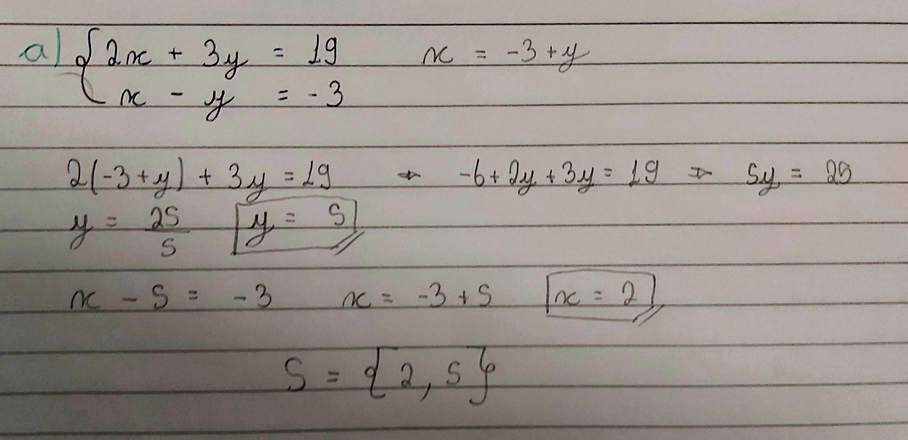

Sistemas lineares são um conjunto de equações, com n incógnitas, mas sempre com o expoente 1. São várias equações com valores em comum, porém com diferentes operações, ou seja, as incógnitas de todas as equações, pertencente a um sistema, são iguais, mas como as operações são diferentes, temos outros resultados. Um mesmo sistema pode ter n incógnitas, com n equações. Os mais comuns são 2x2 e 3x3, mas também podemos ter um sistema 2x4.
Chamamos de SOLUÇÃO, a sequência de números que resolve todas as equações de um sistema. E elas podem ser classificadas como SISTEMA POSSÍVEL DETERMINADO, quando há apenas uma solução possível, SISTEMA POSSÍVEL INDETERMINADO, quando temos várias soluções possíveis, isso geralmente ocorre quando não é possível definir um valor específico para a incógnita e então deixamos ela em função da incógnita. E um SISTEMA IMPOSSÍVEL, quando não há solução.
Sistema linear 2x2 é quando temos duas equações com 2 incógnitas. Para resolver isso podemos usar dois métodos: Método da Adição, e o Método da substituição.
Sistema Linear 2x2, disponibilizado pela professora Dra. VALÉRIA ESPÍNDOLA LESSA, no material didático: MD4 - SISTEMAS LINEARES, na página 5, disponível no SIGAA, para a turma de informática do segundo ano, de 2024, do IFRS, Campus Erechim.
O método da adição consiste em anular uma das incógnitas para então resolver um uma equação simples. Para anularmos primeiramente, temos que multiplicar uma das equações para que os coeficientes das incógnitas fiquem com valores opostos, caso já não sejam, como +3y e -3y, que quando somados se anulam.
O próximo passo é somar os coeficientes e as incógnitas, ou seja, somar os coeficientes dos x, caso tenha anulado o y, e os resultados finais, sendo assim você terá a incógnita e o resultado. Deve-se então isolar a incógnita e terá o primeiro valor.
Em seguida, você elege uma das equações do sistema, para substituir com o valor encontrado e ter o conjunto de soluções deste sistema. Como demonstra a imagem abaixo.
Diferentemente do método da adição, o método da substituição consiste em escolher uma das equações, isolar uma das incógnitas e substituir sua correspondente nas outras equações. Ou seja, ainda em um sistema 2x2, você pode isolar o x da primeira equação, e substituir do x da segunda equação com a equação equivalente, à que ficou no outro lado do sinal de igual, assim irá descobrir o valor do y, depois, com o valor do y deve pegar uma das equações e substituir o valor do y para descobrir o x.
Seguindo a mesma lógica que um sistema 2x2 é quando temos duas equações com duas incógnitas, um sistema 3x3 é quando temos 3 equações com 3 incógnitas. Para resolver esses sistemas, podemos usar os mesmos métodos do sistema 2x2, o método da adição ou o da substituição, claro que agora eles ficam mais trabalhosos para resolver, gerando cálculos longos, mas não é nada muito complexo, é apenas equações de 1º grau. Mas para facilitar e encurtar os cálculos podemos usar um outro método, chamado escalonamento.
O método do escalonamento é um processo para encurtar um sistema e transformar a conta mais fácil, ele consiste em transformar um sistema em uma matriz e zerar alguns termos específicos.
Basicamente, iremos ignorar as letras, incógnitas, e trabalhar apenas pelas com números, tendo assim uma matriz 3x4. Em seguida, usando as propriedades da matriz vamos zerar os termos a21 e a31, é importante lembrar que o termo a11 deve ser igual a 1, para que possamos zerar os elementos usando como referência a primeira linha. Após isso chegou a vez de zerar o termo a32.
Agora com três termos da matriz zerado, chegou a vez de se transformar novamente em um sistema linear. Importante lembrar que quando modificamos as colunas para o elemento a11 = 1, a matriz não está na mesma ordem das letras do sistema inicial. Agora é resolver o sistema pelo método da substituição, ou como preferir. Lembrando que o resultado sempre deve ser escrito na ordem de x, y e z.
Podemos classificar os tipos de solução de um sistema a partir do determinante da matriz quadrada, considerando apenas os valores da incógnita, desconsiderando os resultados das equações. Se o determinante da matriz for igual a 0, classificamos como Sistema SPI, Sistema Possível Indeterminado, ou SI, Sistema Impossível. Caso o determinante seja diferente de 0 teremos um Sistema SPD, Sistema Possível e Determinado.